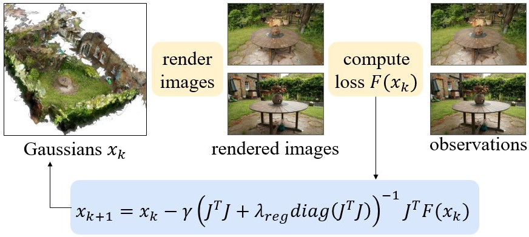
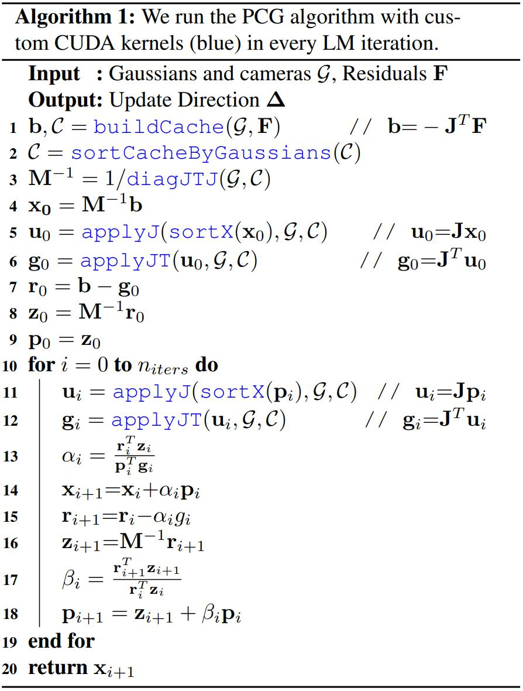
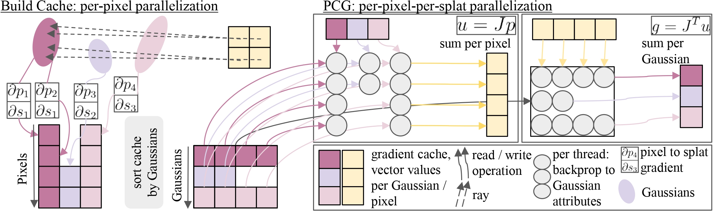
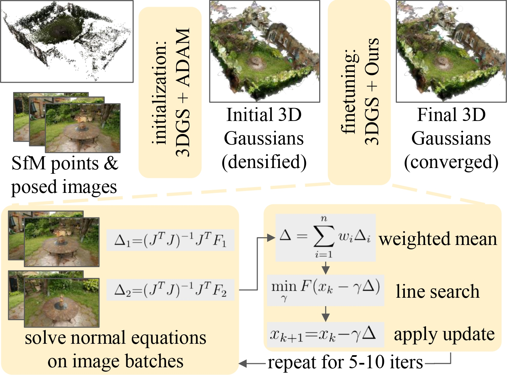
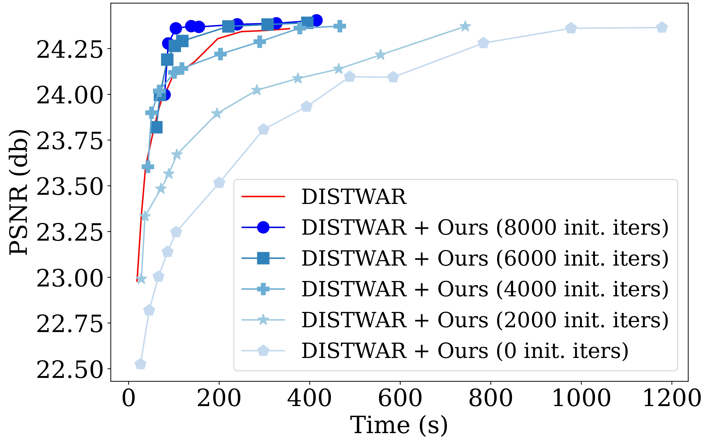
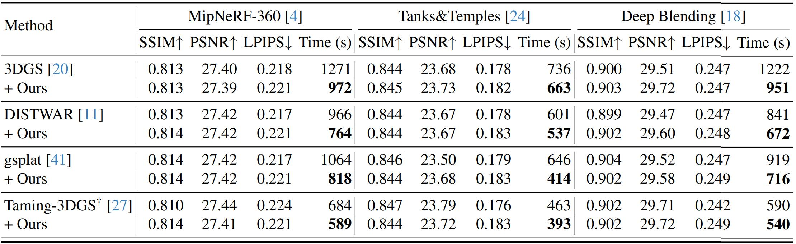
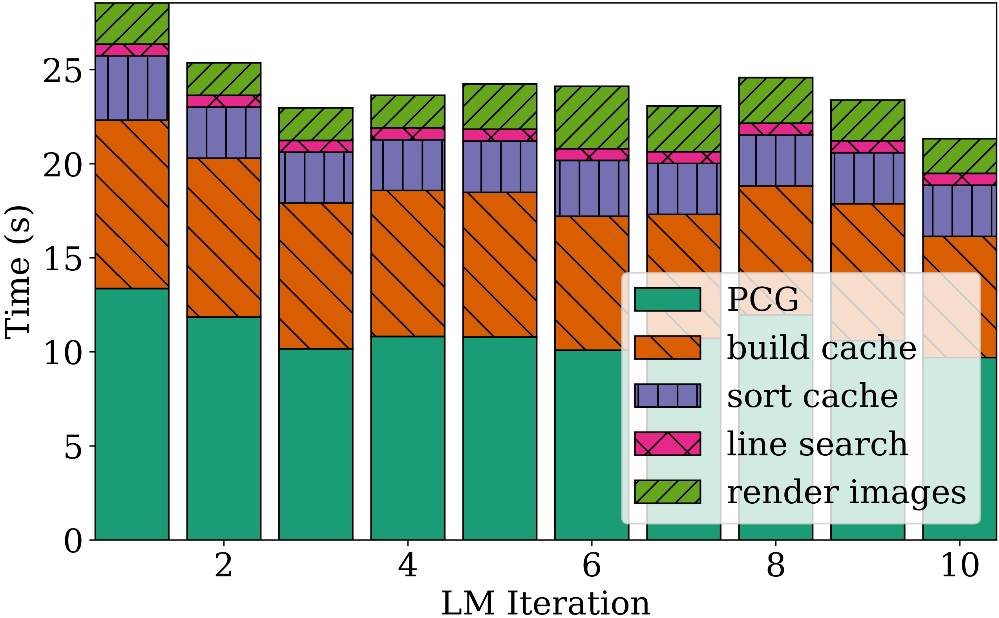

We present 3DGS-LM, a new method that accelerates the reconstruction of 3D Gaussian Splatting (3DGS) by replacing its ADAM optimizer with a tailored Levenberg-Marquardt (LM). Existing methods reduce the optimization time by decreasing the number of Gaussians or by improving the implementation of the differentiable rasterizer. However, they still rely on the ADAM optimizer to fit Gaussian parameters of a scene in thousands of iterations, which can take up to an hour. To this end, we change the optimizer to LM that runs in conjunction with the 3DGS differentiable rasterizer. For efficient GPU parallization, we propose a caching data structure for intermediate gradients that allows us to efficiently calculate Jacobian-vector products in custom CUDA kernels. In every LM iteration, we calculate update directions from multiple image subsets using these kernels and combine them in a weighted mean. Overall, our method is 30% faster than the original 3DGS while obtaining the same reconstruction quality. Our optimization is also agnostic to other methods that acclerate 3DGS, thus enabling even faster speedups compared to vanilla 3DGS.
We accelerate 3DGS optimization by replacing the commonly used ADAM optimizer with a tailored Levenberg-Marquardt (LM). In every LM iteration, we compute a photometric loss and obtain the parameter update vector by solving the normal equations.
We propose a highly-efficient GPU parallization scheme for the preconditioned conjugate gradient (PCG) algorithm within the inner LM loop in order to obtain the respective update directions. To this end, we extend the differentiable 3DGS rasterizer with custom CUDA kernels that compute Jacobian-vector products.
Our proposed caching data structure for intermediate gradients allows us to perform the required Jacobien-vector products fast and efficiently in a data-parallel fashion. Before PCG starts, we create the gradient cache following the per-pixel parallelization of 3DGS. Afterwards, we sort the cache by Gaussians to ensure coalesced read accesses. The cache decouples splats along rays, which allows us to parallelize per-pixel-per-splat during PCG.
First, we use the original ADAM optimizer and densification scheme to arrive at an initialization for all Gaussians. Second, we employ the Levenberg-Marquardt algorithm to finish optimization. In order to scale caching to high-resolution image datasets, we calculate update directions from multiple image subsets and combine them in a weighted mean.
Compared to only using ADAM, we converge faster when using the LM optimizer in the second stage of the optimization. For example, after running ADAM for 6000 or 8000 iterations, we converge to the same quality faster with our novel optimizer. It is also possible to use LM from the beginning, however this does not bring any additional speed-up. Results reported on the "garden" scene from the MipNeRF360 dataset without densification.
By adding our method to baselines, we accelerate the optimization time by 30% on average while achieving similar quality. We can combine our method with others, that improve runtime along different axes. This demonstrates that our method offers an orthogonal improvement, i.e., the LM optimizer can be plugged into many existing methods.
One iteration of our LM optimizer is dominated by solving PCG and building the cache. When running PCG, we execute the applyJ and applyJT kernels multiple times using the per-pixel-per-splat parallelization pattern. In contrast, we execute the buildCache kernel once and parallelize per-pixel, which is only marginally faster. This demonstrates the speed advantage obtained by using our proposed caching structure. All results reported on the “garden” scene from the Mip-NeRF360 dataset after densification is completed.
@preprint{hoellein_2024_3dgslm,
title={3DGS-LM: Faster Gaussian-Splatting Optimization with Levenberg-Marquardt},
author={H{\"o}llein, Lukas and Bo\v{z}i\v{c}, Alja\v{z} and Zollh{\"o}fer, Michael and Nie{\ss}ner, Matthias},
booktitle={arXiV},
year={2024}
}